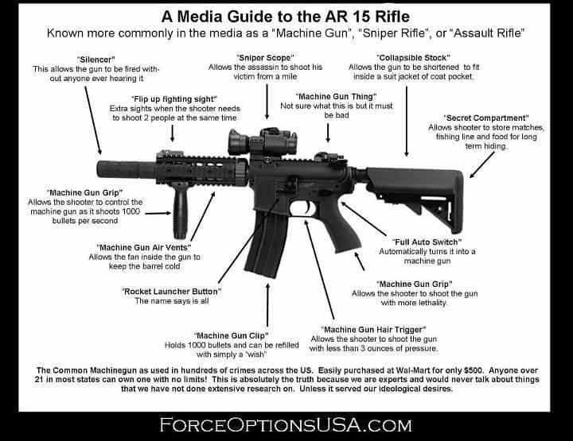
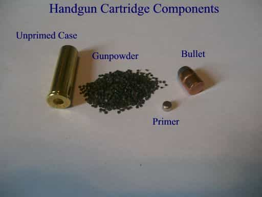

Luke Stranahan is an engineer by trade and an armed patriot by inclination. He writes for Return of Kings as a leisure pursuit and an attempt to do his part to help reverse the slide into moral decrepitude of modern society. Follow him on Twitter.


Firearms panics happen over a variety of things, like acts of domestic terrorism, mass shootings, or Democrats getting elected to office. Though we may not have to worry about this for a few years after 2nd Amendment enthusiast Donald Trump’s decisive victory last night, let’s cover our bases and talk about a panic if future Democrats are elected.
What is a panic for ammo and firearms? A panic is when people go and buy items just to have them because they are worried that there will soon be no more, or it will be illegal to buy and sell such items, but maybe not to own them already, as most Americans still believe in the no ex post facto laws part of the Constitution.
Adding to a panic is speculators, who buy from retailers who are roundly shamed if they raise their own prices, only to resell privately at much higher levels. While this is legal, it certainly isn’t ethical or a decent thing to do, and these folks deserve being shamed and mocked at every opportunity.
Lastly, the gun store’s or site’s inventory cannot handle the flex in the buying demand, nor can the manufacturer, and an artificially contrived panic creates a real scarcity that can only be corrected by the panic running out of steam as everyone buys what they consider to be enough and natural undercutting resets the price back to lower levels.
Some prices never return. 22 Long Rifle ammunition has still not totally recovered from the damage old B-rock “the Islamic Shock” Obama did to it with his multi-year championship of Best Firearms Salesman Ever, and it may be even worse under the Bitch in Chief.
So, what gets grabbed in a panic? What should you get? What should you count on still being available? We’ve got three categories: guns, ammo, and components/accessories.
Anything that’s big on the liberal hit list is a first target for a ban, so it’s a first target for a panic. Look for things that are popular with the right, and scary to the left. Also look for things that are modern; no one is going to ban the M1 Garand anytime soon.
Evil features matter more than destructive power. Anyone who knows anything about guns knows that the AK-47 and the AR-15 fire intermediate cartridges that are puny enough to be considered inhumane in several states with which to hunt deer as they lack the power to kill the animal with marginal shots. However, they’re black and have mean things attached to them, so they’re on the shit list, while a nice blued with wooden stock scoped bolt action rifle in a magnum cartridge capable of wrecking your world from twice the distance that an AR can pull is safe as it looks “traditional.”

They have to be popular to the left to get noticed; rifles like the FAL and anything based of the G3/HK91 action simply don’t have enough exposure to get targeted, unless they pull something sweeping like the USC 18 922r rules again. The Mini 30 and the M1A might be safe; maybe.
For pistols, pretty much any semi-automatic of the polymer age is fair game to want banned. Oftentimes, stupid rules like restrictive magazine sizes get pushed. 1911s, Hi Powers, other old domestic semi-autos, and revolvers should be safe. Expect the libtards to go after Glocks and the like.
Shotguns seem to be immune these days as there’s not a whole lot of difference between a hunting gun and a combat gun other than paint and mag tube length. I think the Saigas are still not being imported, and it’s about the only box mag fed one out there, but anything else makes a good home defense gun that should also be immune to the ammo panic portion as well.
Range (full metal jacket) and defense/hunting (hollow or soft point) cartridges in popular centerfire calibers and 22 Long Rifle will almost literally evaporate from your local store and online, and it’s probably beginning as I write this.
Oddly enough, only certain rounds will suffer panic buying. For rifles, it’s limited to .223/5.56, 7.62×39, and .308/7.62×51. Traditional hunting rounds like 30-30, .243, and .270 do not seem to be impacted. Why doesn’t 30-06 get bought in a panic? As the old joke goes, men with 30-06’s don’t panic, but it really has to do with the feedback cycle I mentioned at the start. If there’s little demand, it cannot exceed the in-store supply, so the perception of it being gone for good cannot occur.

Everything but the shotgun shell and the howitzer round to the far right will sell fast in a panic.
Panic bought pistol ammo is the big 3: 9mm Luger, 40 S&W, and .45 ACP. .380 will round out the affected semi-automatic rounds, and there usually is a bit of a run on .357 Magnum and .38 Special as well. 10mm, .357 SIG, .45 GAP and other magnums like the .44 do not seem to be affected.
For rimfires, .22 Long Rifle just goes poof, while its Magnum brother and smaller, 17 caliber, cousins do not seem to be as affected. Rimfires are not reloadable, and this contributes to their over-stockpiling.
Most centerfire ammo is reloadable, and the serious amongst shooters will roll their own for economy, self-reliance, and performance, so the consumable components will also get some panics. Although I’ve held off on reloading articles until I get my press set back up, we can hit up the components that will get panic bought briefly.

Biggest thing is primers, even bigger than the bullets, oddly enough. The primer is the little metal cup that gets smacked by the firing pin and sets off the powder in modern cartridges, and they come in two sizes for pistols, two for rifles, and of varying hardness to satisfy military specifications.
The second is gunpowder itself. Fortunately, there’s a wide variety of smokeless powder, and everyone tends to have the brands and formulas they prefer, so it takes a little less of a hit than the primers. The third is the bullets, and since there are so many types and manufacturers, they also take a little less of a hit than primers. While you obviously need all three to reload, bear that in mind. Always save your brass, and anyone else’s you can pick up.

Even though the little ones are easier to use, the higher capacity ones disappear first. Get both.
While it is always a good idea to have spare springs and small parts like firing pins and extractors that are prone to breakage, the number one accessory or part to take a hit in panics is the box magazine, especially “high capacity” ones. I don’t mean the 200 round drum mags, although those do take a dive, nor do I really mean the 100 round coffin mags, but I mean the full capacity full sized pistol mags, like a 15 round mag for a full sized pistol, or a 30 round AR-15 mag. Expect to see P-mags and surplus style aluminum AR mags just vanish. The Gabby Giffords Special, the extended Glock 17 30 round mag, is also a contender for vanishing fast in a panic.
Holsters, slings, cleaning accessories, optics, and ammo cans seem to be immune from panics.
If you already own a carbine and/or a semi-auto pistol, make sure you have enough ammo, magazines, and spare parts. It’s a lot better to have one gun with multiple mags and a lot of ammo than many guns with the one or two mags with which they came from the factory and a couple boxes of ammo.
I try to have at least six mags for my semi-auto pistols, and at least ten mags for my semi-auto rifles. Get some rifle mags of different sizes, the 30 and 40 AR mags are fun for shooting standing up, but they get in the way of prone firing and the 10 and 20 rounders are preferable.
Your ultimate ammo goal, I maintain, should be a thousand practice rounds and 500 defense rounds for each gun you have, but, in a pre-panic or panic situation, just get what you can at a normal price; some is better than none. If you’re into reloading, you know what to get already.
If you don’t own anything, and want to soon, refer to some pistol articles, a rifle article, a shotgun article, and a buying guide here. Consider buying some stripped AR lowers to build on a rainy day later on.

Build an AR and meet girls at the range?
No matter who got elected, I think this country is in for rough times. It’s always better to have firearms and not need them, then not have them and need them. Store yours safely, but accessible and ready in times of need.
Read More: 5 Firearms A Man Should Own